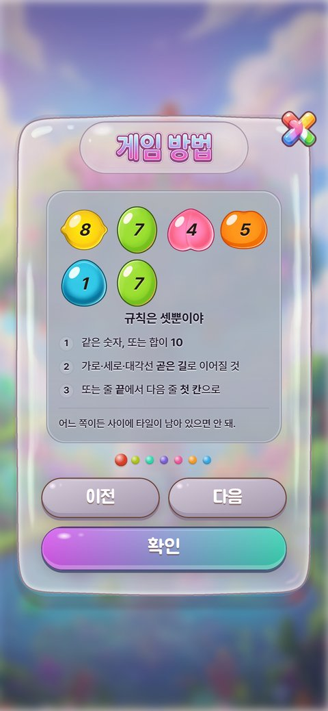
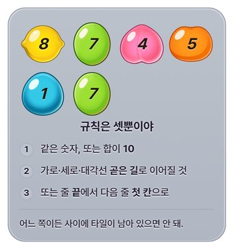
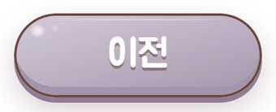
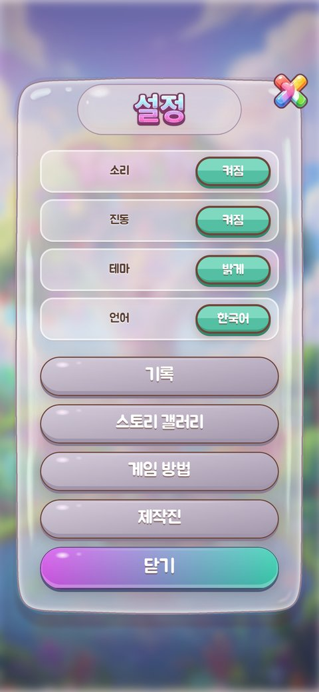
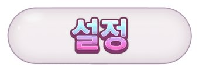
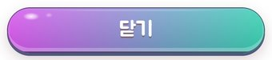

모달 화면 — 게임 방법 · 설정 · 플레이
초점모달 판·제목/타이머 캡슐 = 캐릭창 정보판 정석 #E6DCE2 α.54(연보라핑크). α.83 퇴행 철회. 관문: 정보판 대비 색 Δ1.5·α Δ.006·림 Δ.15, 비침 std 10~34.judge-state.json rev 13 · hud-components.json · kit-2side-* · FRAME-AUDIT-0906.md
공통 정석 프레임 (세 모달 공유)


게임 방법 (규칙 카드) #modal-howto

시안 없음 (S1은 uploads 보조본, 원본 미등재)
들어간 프레임
제목 캡슐 (글자 얹음)
h2#howto-h + ttl-howto-ko
→ f-capsule

안쪽 카드 (규칙)
.howto-art.rules-card · --hcard-*
→ f-modal
페이지 점 (7)
#howto-dots .dot
→ f-text

버튼 — ghost
.btn.btn-ghost (prev/next)
→ f-button

버튼 — primary
.btn.btn-primary (#howto-close)
→ f-button
닫기 X
.r10-x · sian3-close.webp
→ f-x
설정 #modal-settings

시안 없음
들어간 프레임

제목 캡슐 (글자 얹음)
h2#set-h + ttl-settings-ko
→ f-capsule

토글 (On/Off)
.set-tg (#st-sound 외)
→ f-toggle

버튼 — secondary
.btn.btn-secondary (#st-rank)
→ f-button

버튼 — ghost
.btn.btn-ghost (howto/credits)
→ f-button

버튼 — primary
.btn.btn-primary (#st-close)
→ f-button
닫기 X
.r10-x · sian3-close.webp
→ f-x
플레이 (모드 선택) #modal-mode
시안 S4 모달창_스토리게임 모드.png

들어간 프레임

갭 표 — 시안 프레임 ↔ 우리 프레임
계층 T1 화면 · T2 컨테이너 · T3 제어 · T4 내용물 · T5 효과 (정본 §1) · 판정 §4 code / asset / ambiguous / variant
22 행 | T2 6 · T3 14 · T4 2 | code 13 · asset 9 | 🟢 5 · 🟡 17 · 🔴 0
| 시안 프레임 | 우리 프레임 | 판정 | 상태 | 비고 |
|---|---|---|---|---|
| T2S9/S11 젤리판(빈 판) | T2판 — 젤리판 · .jbox--modal · jelly-box.webp | code | 🟢 정석 S9·S11 | 10개 모달 공유 9슬라이스(신규 발주 0). jelly-box=1프레임 준수→f-modal. |
| T2S11 제목 캡슐(빈 것) | T2제목 캡슐 — 빈 것 · .sheet>h2 알약 · S11 색 | code | 🟢 정석 S11 | 7겹 그라데 알약(면색 정석 S11)→f-capsule. |
| T4제목 글자 — 게임 방법 | T4제목 글자 · ttl-howto-ko.webp | asset | 🟡 배포 자산 | h2::after 얹는 글자그림→f-title. |
| T3닫기 X(무지개) | T3닫기 X · .r10-x · sian3-close.webp (96×99) | asset | 🟡 배포 자산 | sian3-close=1프레임 준수(X 자체 실루엣). 사용자 자산→f-x. |
| T2S1 제목 캡슐(글자 얹음) | T2제목 캡슐(글자) · h2#howto-h + ttl-howto-ko | code | 🟢 캡슐 / 🟡 글자 | howto 원본 미등재(S1은 uploads 보조본). 캡슐=code, 글자=asset→f-capsule. |
| T2S1 안쪽 카드(규칙) | T2안쪽 카드 · .howto-art.rules-card · --hcard-* | code | 🟡 값만 맞춤 | 패시브 카드 부품 재사용(⑱)→f-modal. |
| T4S1 페이지 점(7) | T4페이지 점 · #howto-dots .dot | code | 🟡 값만 맞춤 | CSS 7점→f-text. |
| T3S1 버튼 — ghost | T3버튼 ghost · .btn.btn-ghost (prev/next) | code | 🟡 값만 맞춤 | CSS 버튼→f-button. |
| T3S1 버튼 — primary | T3버튼 primary · .btn.btn-primary (#howto-close) | code | 🟡 값만 맞춤 | CSS 버튼→f-button. |
| T3닫기 X(howto) | T3닫기 X · .r10-x · sian3-close.webp | asset | 🟡 배포 자산 | 공통 X→f-x. |
| T2제목 캡슐(설정, 글자 얹음) | T2제목 캡슐 · h2#set-h + ttl-settings-ko | code | 🟢 캡슐 / 🟡 글자 | 설정 시안 없음. 캡슐 code + 글자그림 asset→f-capsule. |
| T3토글(On/Off) | T3토글 · .set-tg (#st-sound 외) | code | 🟡 값만 맞춤 | 코드 pill 토글→f-toggle. |
| T3버튼 — secondary | T3버튼 secondary · .btn.btn-secondary (#st-rank) | code | 🟡 값만 맞춤 | CSS 버튼→f-button. |
| T3버튼 — ghost(설정) | T3버튼 ghost · .btn.btn-ghost (howto/credits) | code | 🟡 값만 맞춤 | CSS 버튼→f-button. |
| T3버튼 — primary(설정) | T3버튼 primary · .btn.btn-primary (#st-close) | code | 🟡 값만 맞춤 | CSS 버튼→f-button. |
| T3닫기 X(설정) | T3닫기 X · .r10-x · sian3-close.webp | asset | 🟡 배포 자산 | 공통 X→f-x. |
| T2S4 제목 캡슐(플레이, 글자 얹음) | T2제목 캡슐 · .r10-ribbon>h2 + ttl-play-ko | code | 🟢 캡슐 / 🟡 글자 | 시안 S4 모달창_스토리게임 모드.png. 캡슐 code + 글자그림 asset→f-capsule. |
| T3S4 모드 행 — 모험 | T3모드 행 모험 · #mode-adv (구운 스프라이트, 4프레임) | asset | 🟡 배포 자산 · 위반 | audit A-1: sian3-btn-adventure 4프레임(판+아이콘+글자+배지) 위반. -blank판+레터링 분리 가능→f-spritebtn. |
| T3S4 모드 행 — 아케이드 | T3모드 행 아케이드 · #mode-arcade (3프레임) | asset | 🟡 배포 자산 · 위반 | sian3-btn-arcade 3프레임(판+아이콘+글자) 위반→f-spritebtn. |
| T3S4 모드 행 — 데일리 | T3모드 행 데일리 · #mode-daily (3프레임) | asset | 🟡 배포 자산 · 위반 | sian3-btn-daily 3프레임 위반→f-spritebtn. |
| T3S4 모드 행 — 타임러시 | T3모드 행 타임러시 · #mode-rush (4프레임) | asset | 🟡 배포 자산 · 위반 | sian3-btn-timerush 4프레임(판+아이콘+글자+NEW배지) 위반→f-spritebtn. |
| T3닫기 X(플레이) | T3닫기 X · .r10-x · sian3-close.webp | asset | 🟡 배포 자산 | 공통 X→f-x. |
FRAME-AUDIT-0906 · 총 431 · 준수 311 · 위반 120(catalog 99 + hud-shape 21) · 미사용 129
창별 초점 (judge-state.json modals)
| 창 | 초점 |
|---|---|
| plate | 모달 판·제목/타이머 캡슐 = 캐릭창 정보판 정석 #E6DCE2 α.54(연보라핑크). α.83 퇴행 철회. 관문: 정보판 대비 색 Δ1.5·α Δ.006·림 Δ.15, 비침 std 10~34. |
| howto | ⑱ 규칙 글이 판 위 맨글자·중앙 빈 공간 → 패시브 카드와 같은 안쪽 젤리 카드 + 그림(기존 자산만, 없으면 🔴 발주 칸), 시안 S1 배치 |
| rank | 내용이 판 아래로 넘쳐 흐름·행 색감 미완 — 판 안 스크롤/높이 규칙, 행 = 설정 모달 행 부품 |
| node | 쓸데없는 줄 정리·구성 재편, 시작 버튼 = 기준 버튼(S10 틀), 캡슐 제목 맨글자 → 제목 레터링 |
| clear | ⑲ 뒤 보드가 비쳐 별·점수·문구 안 읽힘 → ⑱과 같은 안쪽 젤리 카드 + 게임 화면에도 C안 블러 + 제목 레터링 |
| classic | 아케이드/타임러시/데일리 3행이 민무늬 껍데기 — 플레이 모달 행 부품(그림 버튼+아이콘+제목+설명) 재사용으로 완성 |